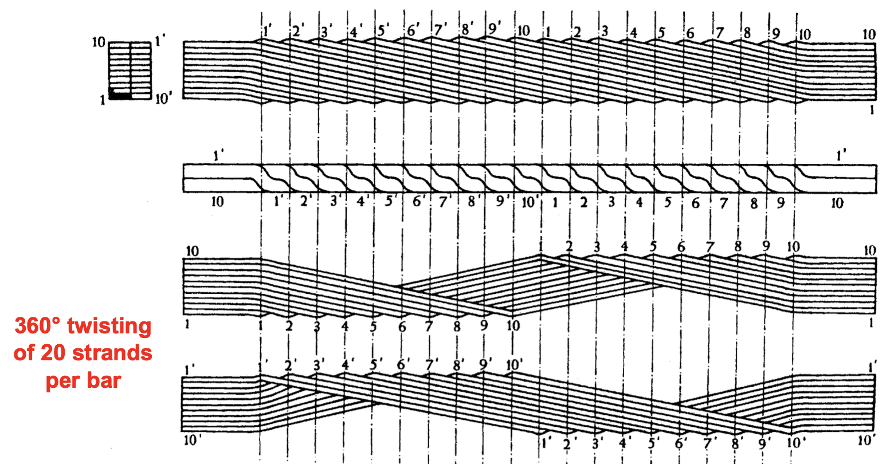
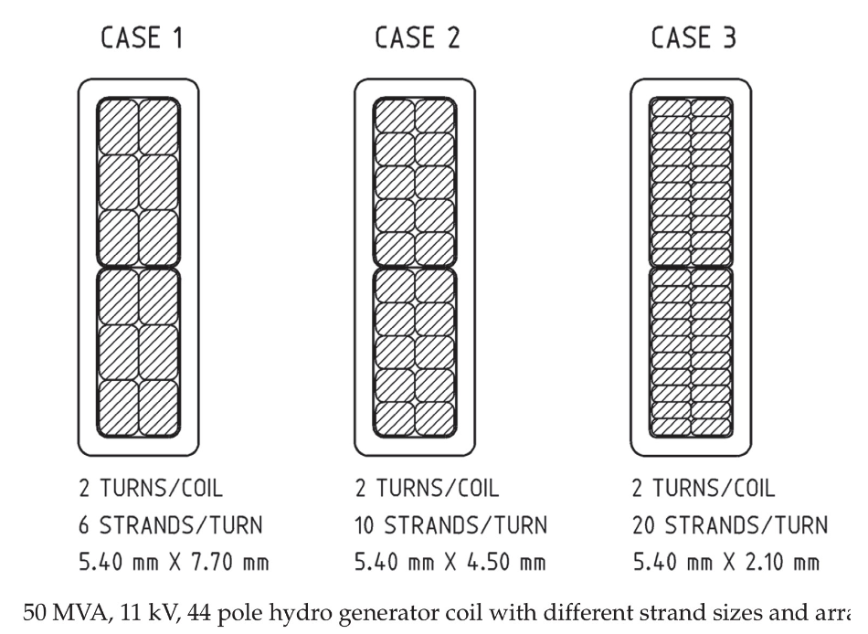

class: center, middle ### EÜAŞ - ODTÜ Elektrik EGEN Generatör Tasarımı ve İmalatı Projesi # Elektrik Makinalarında 3D Tasarım ## Ozan Keysan [keysan.me](http://keysan.me) Office: C-113 <span class="meta">•</span> Tel: 210 7586 --- # Senkron Generatörlerde Kayıplar ## Yükten Bağımsız Kayıplar: - ### Nüve Kayıpları (Histerisiz ve Eddy Kayıpları) - ### Sürtünme kayıpları (Yağlama sistemi, fırçalar vs) - ### Soğutma kayıpları (fan gücü, yüzey hava sürtünmesi) --- # Senkron Generatörlerde Kayıplar ## Yüke Bağlı Kayıplar: - ### Stator sargılarındaki kayıplar (I2R) - ### Akımların yarattığı eddy kayıplar - ### İkaz sargısı (ve sistemi) kayıpları --- ## Sargı Sonu Eddy Kayıpları <img src="./images/egen/eddy_end_winding.png" alt="Drawing" style="width: 400px;"> ### Sargı sonundan taşan manyetik akı finger ve baskı plakalarına dik olarak girer. --- ## Sargı Sonu Eddy Kayıpları ### Azaltma Yöntemleri - ### Baskı levhalarını küçük parçalara bölmek - ### Baskı levhalarına kesikler koymak - ### Manyetik olmayan metal (çelik, alüminyum) kullanmak - ### Son paketleri basamaklı yapmak - ### Bakır ekranlama ile eddy kayıplarını düşürmek --- ## Sargı Sonu Eddy Kayıpları ### Basamaklı laminasyonlar --- ## Oluk Akı Harmonikleri ### Oluk ve rotor yüzeyi arasında yüksek frekanslı B harmonikleri oluşur (frekansı oluk sayısı ve hız ile orantılıdır) --- ## Oluk Akı Harmonikleri <img src="https://www.spindustries.at/wp-content/uploads/2016/06/non_magnetic_slot_wedges.jpg" alt="Drawing" style="width: 600px;"> #### Ankuş bobin bağlantılarında manyetik takozlar kullanmak B'yi yumuşaratarak kayıpları azaltır. --- ## Sargılardaki Eddy Kayıpları ### Oluk içinde taşınan akımdan dolayı oluşan manyetik alan --- ## Sargılardaki Eddy Kayıpları ### Manyetik alan değişiminden dolayı eksenel yönde eddy akımları oluşur. --- ## Sargılardaki Eddy Kayıpları ### Bobinlerde sadece paralel iletkenlerin kullanılması sorunu çözmez, eddy akımları hala dolaşır. --- ## Sargılardaki Eddy Kayıpları ### İletkenı ufak parçalara ayırmak ve sargı sonlarında bobin sıralamasını ters-yüz etmek eddy akımlarını azaltmaya yardımcı olur <img src="./images/egen/transposition1.png" alt="Drawing" style="width: 800px;"> --- ## Sargılardaki Eddy Kayıpları ### Sargı sonu bağlantılarında toplu kaynak yerine tek tek bobinlerin birleştirilmesi eddy akımları oldukça azaltır. Ancak üretimi zahmetli ve zaman alıcıdır. --- ## Sargılardaki Eddy Kayıpları ### Roebel Sargılar  --- ## Sargılardaki Eddy Kayıpları ### Roebel Sargılar --- ## Sargı Boyutlandırma  --- ## Sargı Boyutlandırma ### Boyuta göre kayıplar --- ## Sargı Sonlarındaki Kuvvetler #### Sargı sonlarındaki kuvvetler akımın karesiyle orantılıdır #### \\(\dfrac{1}{2} I^2 \dfrac{L(\theta)}{d \theta}\\) --- # Sargı Üretimi ### [61MVA Stator & Rotor Sargı Değişimi](https://www.youtube.com/watch?v=ov8KAjxMxlU), [sargı üretimi](https://www.youtube.com/watch?v=Y7T6I1wg7tQ) ### Chevy Spark EV [Motor Manufacturing](https://www.caranddriver.com/news/a18744950/we-build-the-chevy-spark-evs-ac-permanent-magnet-motor/) ### [Disributed winding schematic](https://www.researchgate.net/profile/Jakob_Igelspacher/publication/241174581/figure/fig3/AS:340780838342662@1458259891354/Fig-4-Schematic-example-of-a-distributed-winding-of-an-axial-flux-induction-machine.jpg) ### [Preformed coils](https://www.heinrich-schuemann.de/ankerformspulen-200.html), [Preformed coils-2](https://www.heinrich-schuemann.de/files/uploads/Produkte/Elektromaschinenbau/ankerformspulen/anker-w1p.jpg) ### [Coils in the stator](https://empoweringpumps.com/sulzer-hydro-generator-refurbishment-increases-output-by-15/), [Coils in the stator-2](https://4.imimg.com/data4/YY/YY/GLADMIN-/wp-content-uploads-2015-11-diamond_coils_03-500x500.jpg) --- ## Bu sunumu aşağıdaki linkten indirebilirsiniz: ## [keysan.me/egen](http://keysan.me/egen)